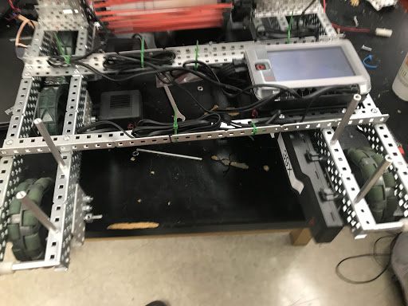

Viper, Version I
The Base
Breakdown:
Motors: 4 motor elevated tank drive
Structure: 6 wheels: Front 2; 4” omni-directional wheels, Back 4; 4” regular wheels; 1:1 chain linking front omni and middle regular wheel (both sides)
Sensors: N/A
Overview:
Viper I consists of a 4 motor, all-drive, base with the front and back two motors directly driven by motors and the middle wheel chain driven to the front and back wheels. The motors are internally geared for torque. The base is made out of 4 1x35 aluminium c-channels in order to save weight as much as possible. The two sides of the drivetrain are connected by 2 1x35 l-channels. Mounted on these two l-channels is the cortex and the battery. There are 4 1x2x27 l-channels mounted on the base for the arm.
For the Future:
We could internally gear the motors to speed because we won’t be carrying a lot of weight. Right now, the brain is mounted on standoffs because we mismeasured the distance between the l-channels. We want to directly mount the brain to the l-channels.
The Arm
Breakdown:
Motors: 2 motor six bar
Structure: 6 bar with a 1:5 torque ratio
Sensors: N/A
Overview:
The arm is mounted by four l-channels and a triangular brace onto the base. The arm consists of two motors internally geared to torque. Viper I has a gear ratio of 1:5 so it can hold up the arm, the fork, and the cap. We used simple “geometry” to figure out the lengths of each beam for the six bar which were 14 holes, 21 holes, and 31 holes. In the engineering logbook, the math we used is shown in detail. We added triangular elastics because the arm would fall down by itself. We also added washers at each of the joints. This was because before the arm was having trouble moving up. We added these washers to loosen the arm.
For the Future:
We will move the whole arm to the left side of the robot to make space for the shooting mechanism which will be on the right side. With the extra space, we will increase the length of the arm.
The Claw
Breakdown:
Motors: N/A, it is passive
Structure: 2x15 c-channel with 2 2x15 c-channels mounted on the bottom of it
Sensors: N/A
Overview:
Our main scoring mechanism is a passive claw that flips up and down via rubber bands. It has a 2x15 c-channel with 2 2x15 c-channels mounted on the bottom of it. A small piece of fat c-channel is on the top to securely grab the caps.
For the Future:
We are going to attach a wrist to the claw so that we have a greater control of scoring the caps. We are also going to have a flip mechanism so that we can easily flip the caps.
Viper, Version II

The Base
Breakdown:
Motors- 4 V5 motor elevated tank drive
Structure- 6 wheels: Front 2; 4” omni-directional wheels, Back 4; 4” regular wheels; 1:1 chain linking front omni and middle regular wheel (both sides)
Sensors- N/A
Overview:
Viper II consists of a 4 motor, all-drive, base with the front and back two motors directly driven by motors and the middle wheel chain driven to the front and back wheels. The motors are geared to perform at 200 rpm. The base is made out of 4 1x3x1x35 aluminium c-channels in order to save weight as much as possible. The two sides of the drivetrain are connected by 2 1x3x35 l-channels. Mounted on these two l-channels is the cortex. The battery is mounted on the inner part of the left side of the drivetrain. The drive is elevated using c-channel 5 holes wide.
For the Future:
We like the base due to its simple but effective functionality. However, we noticed that sometimes collars come loose, and axles disengage with the motor. For the future, we will try to fix this.
The Catapult
Breakdown:
Motors- 1 V5 200 rpm motor
Structure- 1:15 gear ratio, the catapult is 21 holes long and 5 holes wide
Sensors- N/A
Overview:
Viper II has a 1 motor catapult powered by 4 rubber bands. It has a 1:15 gear ratio, where the input gear has 14 teeth shaved off, letting the catapult function. The catapult itself is 21 holes long and 5 holes wide.
For the Future:
The catapult has a lot of potential, and we would like to maximize scoring efficiency. We have noticed that the balls move when being shot, hindering the consistency of the catapult. If we could lock them into place, the catapult would be more effective.

The Intake
Breakdown:
Motors- 1 V5 600 rpm motor
Structure- 1:1 gear ratio, has 3 pairs of 36 teeth sprockets with rubber bands connecting each pair.
Sensors- N/A
Overview:
Viper II has a 1 motor intake powered by a speedy 600 rpm v5 motor. It has 3 pairs of 36 teeth sprockets with rubber bands connecting each pair. Chain connects all the three pairs. The intake has a 1:1 gear ratio, with the motor powering the top sprocket pair.
For the Future:
The intake has been pretty good doing its job of feeding balls into the catapult. However, it has struggled with flipping caps. Most of the time, it either is unable to flip the cap, or it flips the cap twice, resulting in the same position again. We need to figure out how to make a better intake which flips caps efficiently. Also, sometimes a ball needs more momentum to make it into the catapult, which requires us to move the ball up and down. If we could engineer a better transition from the intake to the catapult, this would be fixed.